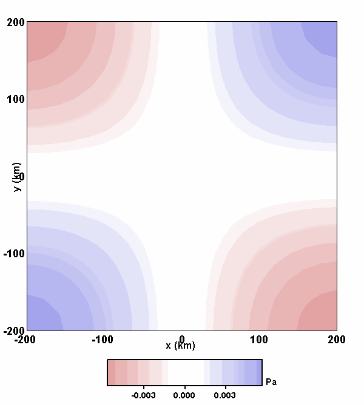
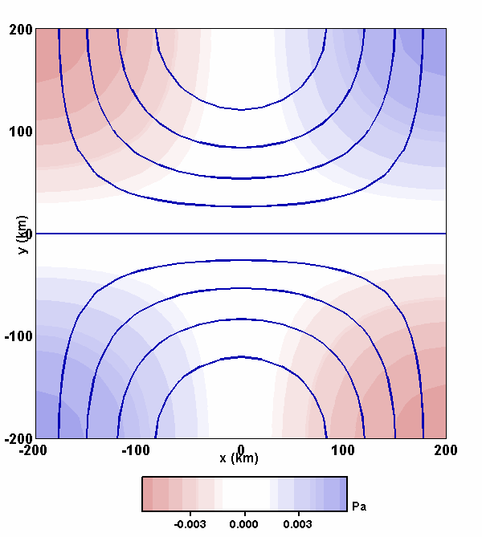
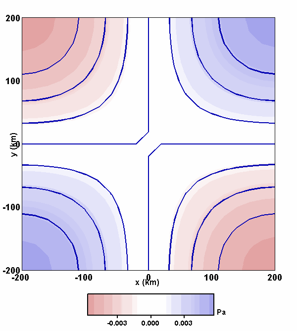

Dynamic Quadrupole Model
Animation 1 for $\widehat{\Phi}$ contours:
$\mu_1 = \mu_2 = 1$

$\mu_1 =0,\quad \mu_2 = 1$

Animation 2 for $\widehat{\Psi}$ contours:
$\mu_1 = \mu_2 = 1$

$\mu_1 =0,\quad \mu_2 = 1$